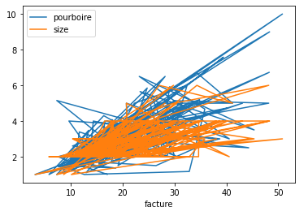

Cahier d'apprentissage Aude
Cahier d’apprentissage
Notes diverses code python
1. Importez le package numpy sous le nom np
2. Créer un vecteur des valeurs 0 de taille 15
3. Créez un vecteur nul de taille 10 mais la cinquième valeur qui est 1
4. Créez un vecteur avec des valeurs allant de 10 à 49
5. Inverser un vecteur
6. Créez un vecteur aléatoire de taille 30 et trouvez la valeur moyenne
7. Rechercher des indices d’éléments non nuls à partir de [0,3,1,2,0,0,4,0]
8. Étant donné un tableau 1D, négativez tous les éléments qui sont entre 2 et 7.
9. Comment extraire tous les nombres entre un intervalle donné d’un tableau numpy?
10. Comment trouver des valeurs communes entre deux tableaux?
11. Comment concaténer deux tableaux verticalment & horizontalement
12. Créer une matrice alétoire de taille (6,4)
13. Faire le transposé une matrice
14. Créer une matrice d’identité de taille 3x3
15. Créer un tableau 3x5x5 avec des valeurs aléatoires
16. Créez un tableau 10x10 avec des valeurs aléatoires et trouvez les valeurs minimum et maximum
17. Créez un tableau 2D avec 1 sur les extrémités et 0 à l’intérieur
18. Créer une matrice 5x5 avec des valeurs 1,2,3,4 juste en dessous de la diagonale
19. Normaliser une matrice aléatoire 5x5
20. Multiplier une matrice 5x3 par une matrice 3x2
21. Comment obtenir les positions où on a les même éléments dans les deux tableaux ?
22. Comment trouver l’index de la n ième répétition d’un élément dans un tableau 1D
23. Comment soustraire un tableau 1d d’un tableau 2d, où chaque élément du tableau 1d soustrait de la ligne respective?
24. Comment supprimer toutes les valeurs manquantes d’un tableau numpy? (avec for)
1. Installer la bibliothèque opencv
2. Importer la bibliothèque
1. Lire une image et afficher son type
2. Afficher cette image et sa taille
3. Rotation de l’image
4. Recadrer une image
5. Redimensionner une image
6. Ajuster le contraste de l’image
7. Rendre une image floue
8. Detecter les contours
9. Convertir une image en niveau de gris
10. Les canneaux Rouge, Vert, Bleu
11. Détection du centre de gravité de l’image
12. Extraction de texte à partir d’une image (OCR)
13. Réduire le bruit pour une image couleur et en niveau de gris
14. Detection des visages avec la méthode de Viola et Jones
1. Importez les bibliothéques necessaires
2. Importez le jeu de données ‘weatherAUS.csv’
3. Exploration des données
4. Manipulation d’une variable de type date
5. Exploration des variables quantitatives
6. Notre variable target (Y) est le RainTomorrow, Récuprer X et Y à partir du jeu de données
7. Fractionnement le jeu de données en jeu d’entraînement et jeu de test (20% pour le test)
8. Checker les valeurs manquantes des variables quantitatives du jeu d’entraînement et de test
9. En utilisant SimpleImputer de Scikit-Learn remplacer les valeurs manquantes dans les variables numérique (entraînement et test) par la moyenne
10. Vérifier que les valeurs manquantes n’existent plus dans les variables quantitatives (entraînement et test)
11. En utilisant la fonction fillna() et mode() remplacer les valeurs manquantes dans les variables qualitatives par la valeur la plus fréquante pour chaque variable.
12. Vérifier que les valeurs manquantes n’existent plus dans les variables qualitative (entraînement et test)
13. Encoder la variable qualitative ‘RainToday’ en utilisant le module category_encoders et la fonction BinaryEncoder(cols=[‘RainToday’]) pour le jeu d’entraînement et de test.
14. Recréer un nouveau jeu d’entrainement en concatenant les variables numériques du jeu d’entrainement précedent avec les deux colonnes RainToday_0’, ‘RainToday_1’qui vont se créer à l’aide de l’étape précedente, plus les variables qualitatives transformées à des variables muettes avec la fonction get_dummies() de pandas
15. Refaire l’étape précedente pour le jeu de test
16. Standariser votre jeu d’entrainement et de test à l’aide de StandardScaler
17. Créer votre modèle de régression logistique et entraînez le sur les données d’entraînement
18. Predire les résultats du modèle sur l’ensemble du test
19. Afficher la matrice de confusion, TP, TN, FP, FN sur le jeu du test en utilisant la fonction confusion_matrix
20. Calculer les métriques de classification (accuracy, classification error, precision, recall, specificity) en utilisant seulement les valeurs de TP, TN, FP, FN.
Brief 3 Decision tree, random Forest –Aude
Index